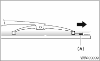
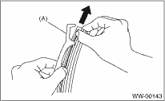

WIPER AND WASHER SYSTEMS > Wiper Blade
DISASSEMBLY
1. FRONT
Pull the pull stopper (A) side of the wiper rubber and remove the rubber from the blade assembly.

2. REAR
Pull the wiper rubber top slightly from stopper (A) and pull out completely.
